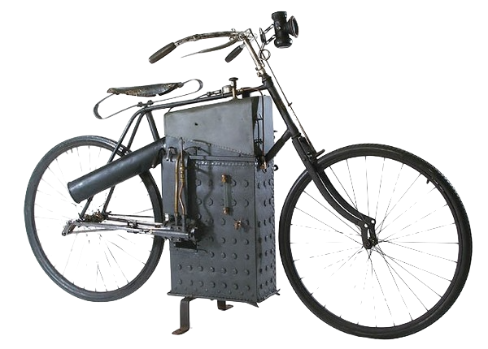

The Motorcyclist's Joy
A Short History
The motorcycle as we know it today is a sleek and speedy alternative to a traditional bicycle; the car's cool angsty cousin, trading in pedals for a clutch and throttle and a bell with a spedometer. But, that is not how they always used to be. Would you believe me if I told you the first motorcycle wasn't even gasoline powered, but steam?
The first motorcycle was built by Sylvester Howard Roper in 1867: A steam powered bicycle that could reach speeds of 8 mph. It was a simple design, with a boiler mounted on the frame and a single cylinder engine driving the rear wheel. While not a commercial success, it laid the groundwork for future developments in the motorcycle industry.
In 1885, Gottlieb Daimler and Wilhelm Maybach created the first gasoline powered motorcycle, the "Reitwagen". This vehicle was a significant advancement in motorcycle design, featuring a four-stroke engine. The Reitwagen was capable of reaching speeds of up to 10 mph, making it one of the fastest vehicles of its time.
With the early 1900s came the rise of several motorcycle manufacturers, most notably Harley-Davidson and Indian. These manufacturues produced powerful and reliable motorcycles that quickly gained popularity amongst riders. The introduction of the V-twin engine in the early 1900s revolutionized the motorcycle design, providing power and torque that its predecessor had been lacking.

The 1920s and 1930s saw the emergence of the "café racer" culture, with riders customizing their motorcycles for speed and style. This trend continued into the 1960s and 1970s, with the rise of Japanese manufacturers like Honda and Yamaha, who produced lightweight and powerful motorcycles that appealed to a new generation of riders.

Today, motorcycles come in a variety of styles and designs, from cruisers to sport bikes to touring bikes. They are used for everything from commuting to long-distance travel, and they continue to be a popular choice for riders around the world. The motorcycle has come a long way since its humble beginnings, and it remains a symbol of freedom and adventure.
The motorcycle has a rich and fascinating history that has shaped its design and popularity over the years. From its steam-powered origins to its modern-day iterations, the motorcycle has evolved into a versatile and powerful vehicle that continues to capture the hearts of riders everywhere.